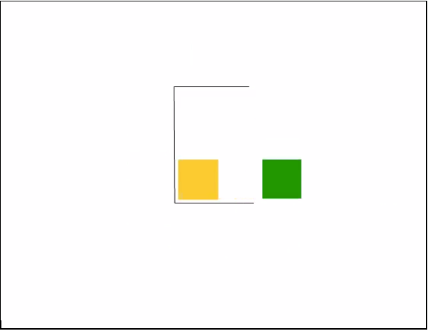

<!DOCTYPE html>
<html>
    <head>
        <title>Action Perception Task</title>
        <script src="jspsych-6.0.5/jspsych.js"></script>
        <script src="jspsych-6.0.5/plugins/jspsych-html-keyboard-response.js"></script>
        <script src="jspsych-6.0.5/plugins/jspsych-image-keyboard-response.js"></script>
        <script src="jspsych-6.0.5/plugins/jspsych-html-slider-response.js"></script>
        <script src="jspsych-6.0.5/plugins/jspsych-survey-text.js"></script>
        <script src="jspsych-6.0.5/plugins/jspsych-survey-multi-choice.js"></script>
        <script src="jspsych-6.0.5/plugins/jspsych-video.js"></script>
        <link href="jspsych-6.0.5/css/jspsych.css" rel="stylesheet" type="text/css"></link>
    </head>
    <body></body>
    <script>

      // create timeline
      let timeline = [];

      var six_digit_random = six_digit_random();

      // assign a unique number to the participant
      let enter_participant_id = {

        // jsPsych specific: must enter the type of object
        type: "html-keyboard-response",

        // for "survey-text", there must be an array of questions in this format
        stimulus: "Participant ID (please copy and paste to MTurk page, then press 'p' to continue): <br><br>"+ six_digit_random,

        choices: ['p'],

        // create additional property with key "test_part" for easy access later
        data: {test_part: 'participant_id'}
      }

      // push object to timeline
      timeline.push(enter_participant_id);

      let consent_form = {
        type: "survey-multi-choice",
        questions: [{prompt: "<b>Online Consent Form</b>"+
        "<br>"+
        "<p>Northeastern University, Department of Psychology. Affective and Brain Science Lab</p>"+
        "<p>Name of Investigator: Ajay B. Satpute, PhD</p>"+
        "<p>Project Title: Action Perception<p>"+
        "<br>"+
        "<p>Thank you for volunteering for our study! You must be between the ages of 18-65, have normal or corrected-to-normal color vision and be a fluent speaker of English in order to participate. In addition, in order to work on this HIT you must have the Adult Content Qualification.</p>"
        +
        "<p>For this online study, you will be asked to watch a series of short video clips and describe what you see. You will also be asked to predict what will happen next in the videos. These videos will only consist of multiple shapes on a screen. While these images are used widely in psychology experiments, if you do not wish to be exposed to them please do not proceed with this study.</p>"
        +
        "<p>You will be asked to make simple judgments about each stimulus. These include judgments about what you think is currently happening and what you think will happen if the video continues.</p>"
        +
        "<p>The entire process may vary, but typically takes less than 1 hour.</p>"
        +
        "<p>The possible risks or discomforts of the study are minimal. You will be viewing images of shapes moving together. If you feel uncomfortable you may stop the task at any time.</p>"
        +
        "<p>You will receive $6 for completing this study.  You must complete 100% of the responses in order to receive payment.</p>"
        +
        "<p>Your part in this study is anonymous to the researcher(s). However, because of the nature of web-based surveys, it is possible that respondents could be identified by the IP address or other electronic record associated with the response. Neither the researcher nor anyone involved with this survey will be capturing those data. Any reports or publications based on this research will use only group data and will not identify you or any individual as being affiliated with this project. The only individually-identifying data we receive from Mechanical Turk are your unique identifier and your country. Your data are also stored on Mechanical Turk's servers, and the data there are subject to the Amazon Mechanical Turk Privacy Notice and Participation Agreement.</p>"
        +
        "<p>If you have any questions regarding electronic privacy, please feel free to contact Northeastern University’s Office of Information Security at privacy@neu.edu.</p>"
        +
        "<p>If you have any questions about the study, you can contact the experimenters (abslab.nu@gmail.com) or the Principle Investigator, Dr. Ajay Satpute (a.satpute@northeastern.edu).</p>"
        +
        "<p>This study has been reviewed and approved by the Institutional Review Board (IRB) of Northeastern University (#18-02-20).  If you have any questions regarding your rights as a research participant, please Northeastern University’s Office of Human Subject Research Protection at irb@neu.edu or 617-373-4588. You may call anonymously if you wish.</p>"
        +
        "<p>Your participation is completely voluntary, and you may choose to discontinue at any time without penalty. If you prefer not to participate or to discontinue participation, simply closer the browser at any time.</p>"
        +
        "<p>By clicking 'Yes, I provide consent to participate in this study' and pressing the 'OK' button, you assert that you understand the statement given above and consent to participate in the study. Please print out a copy of this consent form for your records or contact us if you would prefer an electronic copy of the consent.</p>"
        +"<a href='https://www.dropbox.com/s/06npfczzlc1b4mg/ConsentForm.pdf?dl=0'>Consent Form .pdf</a>",
        options: ['Yes, I provide consent to participate in the study']}],
        button_label: 'OK',
        data: {test_part: 'consent_form'}
      }
      timeline.push(consent_form);

      let consent_response = {
        type: 'html-keyboard-response',
        stimulus: 'You have not given consent to participate in this study. Therefore, you may not proceed.',
        choices: jsPsych.NO_KEYS,
        trial_duration: function response_duration() {

          // get the user's response to whether or not they agree to the terms of the consent form
          let yes_or_no = jsPsych.data.get().filter({test_part: 'consent_form'}).select('responses').values[0];

          // flash 1 millisecond screen if the user gives consent
          if (yes_or_no == '{"Q0":""}') {
            return;
          }

          // return nothing if the user does not give consent (trial duration will be infinite by default)
          return 1;
        },
        data: {test_part: 'consent_response'}
      }
      timeline.push(consent_response);

      // welcome user
      let welcome = {

        // html-keyboard-response allows the user to continue via key press
        // by default user may press any key
        type: "html-keyboard-response",

        // stimulus is the text displayed on the screen, prompts user
        stimulus: "<p><b>Action Perception Task</b></p>" +
          "<p>Welcome to the experiment. Press any key to begin.</p>"
      };
      timeline.push(welcome);

      // give instructions to the experiment
      let instructions = {
        type: "html-keyboard-response",
        stimulus: "<p>In this experiment, you will be shown a video consisting of moving shapes. Once the clip ends, you will be asked to predict the next movement of one of the shapes. Once you have made a prediction, the true outcome will be displayed on screen. You will then be asked to rate how much you expected the outcome. Finally, you will be asked to explain your answer to the previous question. This process will repeat 6 times.</p>"+
          "<p>This task should take no longer than one hour to finish. However, you may take as much as you need.<p>"+"<br>"+
          "<p>Press any key to continue.</p>",
      };
      timeline.push(instructions);

      // create fixation plus sign
      let fixation = {
        type: 'html-keyboard-response',
        stimulus: '<p style="font-size:200px">+<p>',

        // user cannot press any keys to continue
        choices: jsPsych.NO_KEYS,

        // instead, the user must wait 2 seconds
        trial_duration: 2000,
        data: {test_part: 'fixation'}
      }

      // create screen right before beginning practice
      let practice_proceed = {
        type: "html-keyboard-response",
        stimulus: "<p><b>This will be a practice round.</b></p>"+
          "<p>Press any key to continue.</p>"
      }

      // list of practice video links (link construction process not necessary for practice round)
      let practice_videos = [
        "<div style='border:1px solid black;'><video src='videos/square_obs.mp4' width='600' height='300' autoplay='1'></video></div>"+"<br><br><br><br><br><br><br>",
        "<div style='border:1px solid black;'><video src='videos/maze_obs.mp4' width='600' height='300' autoplay='1'></video></div>"+"<br><br><br><br><br><br><br>"
      ];

      // list of practice video durations (in milliseconds)
      // ~1000 added to each video length to compensate for video loading speed
      let practice_time_list = [
        10500,
        6700
      ];

      // list of screenshots to be displayed after their respective observed videos
      let practice_screenshot_list = [
        "</img>",
        "</img>"
      ]

      // create list of numbers 0 to n
      // this list will be randomized later
      // randomized array to be used for shuffling video order
      let unshuffled_array = [
        0,
        1,
        2,
        3,
        4,
        5
      ];

      // call shuffle() function, value assigned to shuffled_array
      let shuffled_array = shuffle(unshuffled_array);

      // unshuffled list of shortened test video links
      // to be converted into full link via make_link() function
      let unshuffled_short_observed = [
        "videos/bouncing_obs.mp4",
        "videos/bumping_obs.mp4",
        "videos/ignoring_obs.mp4",
        "videos/meeting_obs.mp4",
        "videos/rounding_obs.mp4",
        "videos/searching_obs.mp4"
      ];

      // turn the observed video short links into long links
      let unshuffled_observed = make_link(unshuffled_short_observed);

      // unshuffled list of test video times
      // ~1000 added to video length to compensate for video loading speed
      let unshuffled_observed_time_list = [
        13000,
        3400,
        6200,
        9000,
        13200,
        10000
      ];

      // list of screenshots (last frame of the video)
      let unshuffled_screenshot_list = [
        "</img>",
        "</img>",
        "</img>",
        "</img>",
        "</img>",
        "</img>"
      ]

      // unshuffled list of shortened social feedback video links
      let unshuffled_social_short_videos = [
        "videos/bouncing_social.mp4",
        "videos/bumping_social.mp4",
        "videos/ignoring_social.mp4",
        "videos/meeting_social.mp4",
        "videos/rounding_social.mp4",
        "videos/searching_social.mp4"
      ];

      // turn social feedback short links into long links
      let unshuffled_social_feedback_videos = make_link(unshuffled_social_short_videos);

      // unshuffled list of social feedback video times
      // ~1000 added to video length to compensate for video loading speed
      let unshuffled_sf_time_list = [
        3500,
        2700,
        4000,
        3000,
        4000,
        3000
      ];

      // unshuffled list of shortened pattern feedback videos
      let unshuffled_pattern_short_videos = [
        "videos/bouncing_pattern.mp4",
        "videos/bumping_pattern.mp4",
        "videos/ignoring_pattern.mp4",
        "videos/meeting_pattern.mp4",
        "videos/rounding_pattern.mp4",
        "videos/searching_pattern.mp4"
      ];

      // turn the pattern feedback short links into long links
      let unshuffled_pattern_feedback_videos = make_link(unshuffled_pattern_short_videos)

      // unshuffled list of pattern feedback video times
      // ~1000 added to video length to compensate for video loading speed
      let unshuffled_pf_time_list = [
        5000,
        3000,
        2000,
        3000,
        9000,
        4500
      ];

      // calls match_with_array function
      // shuffles all of the test arrays according to the shuffled array of integers
      // they can't each be shuffled differently because the videos still need to correspond to one another
      let observed_videos = match_with_array(shuffled_array, unshuffled_observed);
      let observed_time_list = match_with_array(shuffled_array, unshuffled_observed_time_list);
      let screenshot_list = match_with_array(shuffled_array, unshuffled_screenshot_list);
      let social_feedback_videos = match_with_array(shuffled_array, unshuffled_social_feedback_videos);
      let sf_time_list = match_with_array(shuffled_array, unshuffled_sf_time_list);
      let pattern_feedback_videos = match_with_array(shuffled_array, unshuffled_pattern_feedback_videos);
      let pf_time_list = match_with_array(shuffled_array, unshuffled_pf_time_list);

      // these three calls shuffle the SHORTENED links - this is necessary for the experiment_data() function for readability
      let shuffled_short_observed = match_with_array(shuffled_array, unshuffled_short_observed);
      let shuffled_social_short_videos = match_with_array(shuffled_array, unshuffled_social_short_videos);
      let shuffled_pattern_short_videos = match_with_array(shuffled_array, unshuffled_pattern_short_videos);

      // create random number, either 0 or 1, used for practice section
      let randomization1 = Math.floor((Math.random() * 2));

      // array of options/answers to multiple choice question, used for both practice and actual
      let question_options = ['up', 'down', 'left', 'right', 'other'];

      // create object: multiple choice practice question
      let practice_question = {
        type: "survey-multi-choice",
        questions: [{prompt: practice_screenshot_list[randomization1]+"<p>Where will the <font color='MediumSeaGreen'>GREEN</font> square go next?</p>", options: question_options, required: true}],
        data: {test_part: 'practice_question'}
      }

      // create object
      // if other was picked, prompt user with type response
      // if a direction was picked, show 1 millisecond blank screen
      let practice_other = {

        // function returns timeline object type
        type: function practice_type() {

          // get the user's response to the practice question under the key called "responses"
          let multiple_choice_response = jsPsych.data.get().filter({test_part: 'practice_question'}).select('responses').values[0];

          // return test type according to value of the key
          if (multiple_choice_response == '{"Q0":"other"}') {
            return 'survey-text';
          }
          return 'html-keyboard-response';
        },

        // since stimulus is required if the test type is "html-keyboard-response", it will be a blank space
        // if the test type is "survey-test", this key will be IGNORED
        stimulus: ' ',

        // prompts user to provide written explanation if test type is "survey text"
        // if the test type is "html-keyboard-response", this key will be IGNORED
        // function must be defined here (cannot be moved to the end)
        questions: function practice_question() {

          let multiple_choice_response = jsPsych.data.get().filter({test_part: 'practice_question'}).select('responses').values[0];

          // same as above: user will be prompted ONLY if they clicked "other"
          if (multiple_choice_response == '{"Q0":"other"}') {
            return [{prompt: "Other:", rows:3}];
          }
        },
        data: {test_part: 'practice_other'},

        // makes the blank screen 1 millisecond long only if "html-keyboard-response"
        trial_duration: 1
      }

      // rate level of surprise using a slider
      let slider = {
        type: "html-slider-response",
        stimulus: "How expected was that outcome?",

        // labels the slider
        labels: ["very unexpected", "very expected"],
        slider_width: 4000,
        data: {test_part: 'slider'}
      }

      // free response question to explain level of surprise
      let explanation = {
        type: "survey-text",
        questions: [{prompt: "Please explain your answer.", rows:3}],
        data: {test_part: 'explanation'}
      }

      // create video object for the practice round
      let selected_practice_video = {
        type: "html-keyboard-response",

        // using the random number generated (0 or 1), select either the social or physical practice video
        stimulus: practice_videos[randomization1],
        choices: jsPsych.NO_KEYS,

        // using random number generated, select the corresponding time
        trial_duration: practice_time_list[randomization1]
      }

      // create nested timeline for practice round
      let practice_round = {
        timeline: [practice_proceed, fixation, selected_practice_video, practice_question, practice_other]
      }
      timeline.push(practice_round);

      // screen right before test begins
      let test_intro = {
        type: "html-keyboard-response",
        stimulus: "<p><b>The practice round has ended. The task will now begin.</b></p>"+
          "<p>Press any key to continue</p>"
      }
      timeline.push(test_intro);

      // condition ? return social_feedback_videos if true, return pattern_feedback_videos if false
      // the result of this statement will become the parameter for create_trials()
      // The user will receive either all social or all pattern feedback videos
      let feedback_videos = randomization1 == 0 ? social_feedback_videos: pattern_feedback_videos;

      // call create_trials() function
      let test_procedure = create_trials(
        observed_videos,
        feedback_videos,
        randomization1,
        screenshot_list,
        slider,
        explanation,
        observed_time_list,
        fixation,
        sf_time_list,
        pf_time_list
      );

      // put nested timeline into big timeline
      let test_trials = {
        timeline: test_procedure
      }
      timeline.push(test_trials);

      // end screen
      let end_screen = {
        type: "html-keyboard-response",
        stimulus: function finish_task() {

          // retrieve the generated user id
          let id = JSON.stringify(six_digit_random);

          // send data to s3 bucket
          send_data(id);
          return "<p>Congratulations, you have completed part 1 of the experiment. Click the link below for part 2.</p>"+"<a href='https://neu.co1.qualtrics.com/jfe/form/SV_80J3UhoUJ013LbT'>https://neu.co1.qualtrics.com/jfe/form/SV_80J3UhoUJ013LbT</a>";
        },
        choices: jsPsych.NO_KEYS
      }
      timeline.push(end_screen);

      // initialize the big timeline
      jsPsych.init({
        timeline: timeline,

        // when big timeline ends, perform these operations
        on_finish: function(data){

          jsPsych.data.displayData();
        }
      });

      // method create nested timeline for the test part
      function create_trials(
        observed_videos,
        feedback_videos,
        randomization1,
        screenshot_list,
        slider,
        explanation,
        observed_time_list,
        fixation,
        sf_time_list,
        pf_time_list) {

        // define nested timeline
        let logistics_timeline = [];

        // for each observed video, append objects created at the top, in order
        for (let i = 0; i < observed_videos.length; i++) {

          // put fixation, social video, and multiple choice question in timeline
          logistics_timeline.push(fixation);

          // put observed video in timeline as a JSON object
          let video_object = {
            type: "html-keyboard-response",

            // take link with index "i" from the list of shuffled observed links
            stimulus: observed_videos[i],
            choices: jsPsych.NO_KEYS,

            // take timestamp with index "i" from the observed_time_list
            trial_duration: observed_time_list[i],
            data: {test_part: 'video_url'}
          }

          logistics_timeline.push(video_object);

          // create object: multiple choice test question
          let question = {
            type: "survey-multi-choice",
            questions: [{prompt: screenshot_list[i]+"<p>Where will the <font color='MediumSeaGreen'>GREEN</font> square go next?</p>", options: question_options, required: true}],
            data: {test_part: 'question'}
          }

          logistics_timeline.push(question);

          // same as practice_other, save for a few things
          let other = {
            type: function type() {

              // unlike practice_other, we need to get the value of the most recent response
              // in order to do this we find the length and use that as the index for the array of responses
              let length = jsPsych.data.get().filter({test_part: 'question'}).select('responses').values.length;
              let multiple_choice_response = jsPsych.data.get().filter({test_part: 'question'}).select('responses').values[length-1];
              if (multiple_choice_response == '{"Q0":"other"}') {
                return 'survey-text';
              }
              return 'html-keyboard-response';
            },
            stimulus: ' ',
            questions: function question() {
              let length = jsPsych.data.get().filter({test_part: 'question'}).select('responses').values.length;
              let multiple_choice_response = jsPsych.data.get().filter({test_part: 'question'}).select('responses').values[length-1];
              if (multiple_choice_response == '{"Q0":"other"}') {
                return [{prompt: "Other:", rows:3}];
              }
            },
            data: function testpart() {
              let length = jsPsych.data.get().filter({test_part: 'question'}).select('responses').values.length;
              let multiple_choice_response = jsPsych.data.get().filter({test_part: 'question'}).select('responses').values[length-1];

              // if the type of test is a survey-text ("other" was picked the question prior)
              // create a key for the trial called test_part
              // since the user's response to the survey_text will automatically be logged in "responses", we don't worry about making a responses: key
              if (multiple_choice_response == '{"Q0":"other"}') {
                return {test_part: 'other'};
              }

              // if the type of test is an html-keyboard-response ("other" was NOT picked the question prior)
              // create two keys, since the "responses" key is not a given key in html-keyboard-response trials
              // therefore we have to make it ourself
              // this is important because later we will be looking for the value "responses" key when gathering data
              return {test_part: 'other', responses: 'not an "other"'};
            },

            // if html-keyboard-response, the blank screen will last for 1 millisecond
            // if survey-text, this key will be ignored
            trial_duration: 1
          }
          logistics_timeline.push(other);

          // if the random number is 0 -- the videos are all social
          if (randomization1 == 0) {

            // put feedback video in timeline
            let feedback_object = {
              type: "html-keyboard-response",

              // take social feedback video with index "i" from social_feedback_videos list
              stimulus: social_feedback_videos[i],
              choices: jsPsych.NO_KEYS,

              // take social feedback video timestamps with index "i" from sf_time_list
              trial_duration: sf_time_list[i],
              data: {test_part:'feedback_url'}
            }
            logistics_timeline.push(feedback_object);
          }

          // same thing except this time the random number is 1 and the videos are all pattern
          else {

            let feedback_object = {
              type: "html-keyboard-response",

              // take pattern feedback video with index "i" from pattern_feedback_videos list
              stimulus: pattern_feedback_videos[i],
              choices: jsPsych.NO_KEYS,

              // take physical feedback video timestamps with index "i" from sf_time_list
              trial_duration: pf_time_list[i],
              data: {test_part:'feedback_url'}
            }
            logistics_timeline.push(feedback_object);
          }

          // put slider question in timeline
          logistics_timeline.push(slider);

          // put explanation in timeline
          logistics_timeline.push(explanation);
        }
        return logistics_timeline;
      }

      // function that makes and combines numerous JSON objects into a list containing 6 keys each (using data)
      function experiment_data() {

        // define timeline of JSON objects
        let trial_timeline = [];
        for (let i = 0; i < observed_video.length; i++) {
          let json = {

            // for each of these keys we are selecting all of the data for that particular observed video
            // jsPsych.data.get() gets all of the data from the experiment
            // .filter() filters the data so that it will only return trials that are part of the certain "test_part", returning an array of JSON obj
            // .select() selects the particular key within the trials
            // .values gets the value of the corresponding key in an array, so the [i] is needed
            "video_url": shuffled_short_observed[i],
            "answer_to_question":jsPsych.data.get().filter({test_part: 'question'}).select('responses').values[i],
            "other_explanation": jsPsych.data.get().filter({test_part: 'other'}).select('responses').values[i],

            // calls function that returns either the shuffled social or pattern SHORT arrays, depending on randomization1
            "feedback_url": social_or_pattern(i),
            "slider_value":jsPsych.data.get().filter({test_part: 'slider'}).select('response').values[i],
            "slider_explanation":jsPsych.data.get().filter({test_part: 'explanation'}).select('responses').values[i]
          }
          trial_timeline.push(json);
        }
        return trial_timeline;
      }

      function social_or_pattern(i) {
        if (randomization1 == 0) {
          return shuffled_social_short_videos[i];
        }
        return shuffled_pattern_short_videos[i];
      }

      // this method takes an array and shuffles it randomly
      // link to original post: https://github.com/Daplie/knuth-shuffle/blob/master/index.js
      function shuffle(array) {
        let currentIndex = array.length, temporaryValue, randomIndex;

        // While there remain elements to shuffle...
        while (0 !== currentIndex) {

          // Pick a remaining element...
          randomIndex = Math.floor(Math.random() * currentIndex);
          currentIndex -= 1;

          // And swap it with the current element.
          temporaryValue = array[currentIndex];
          array[currentIndex] = array[randomIndex];
          array[randomIndex] = temporaryValue;
        }
        return array;
      }

      function make_link(array) {
        let new_array = [];
        let part_1 = "<div style='border:1px solid black;'><video src="
        let part_2 = " width='400' height='300' autoplay='1'>Error: your browser does not support this!</video></div>"+"<br><br><br><br><br><br><br><br>"

        for (let i = 0; i < array.length; i++) {

          let combined = part_1 + array[i] + part_2;
          new_array.push(combined);
        }
        return new_array;
      }

      // take in the shuffled array of integers and second array of the same length
      // shuffle the second array based on the order of that shuffled array of integers
      function match_with_array(shuffled_array, substance_array) {
        let new_array = [];

        for (let i = 0; i < shuffled_array.length; i++) {

          // for each index in the shuffled array of integers, set its corresponding integral value to shuffled_value
          let shuffled_value = shuffled_array[i];

          // that integer will become the index for the value we will append to the new array
          new_array.push(substance_array[shuffled_value]);
        }
        return new_array;
      }

      // sends the user's data to the S3 bucket
      function send_data(id) {

        // define new XML Http request
        let xhr = new XMLHttpRequest();

        // (method, url, asynchronous(y/n))
        xhr.open("POST", "https://7k5k1tu2bl.execute-api.us-east-1.amazonaws.com/Production/SaveData", true);
        xhr.setRequestHeader('Content-Type', "application/x-www-form-urlencoded; charset=UTF-8");

        // JSON.stringify turns a non-string into a string so that it can be sent to the bucket
        xhr.send(JSON.stringify({
          "data":JSON.stringify(experiment_data()),

          // id is already a string so it does not need JSON.stringify
          "participant_id":id
        }));
      }

      // used to generate unique 6 digit id
      // potential issue: does NOT prevent two identical numbers from being generated, although the odds of this are extremely low
      function six_digit_random() {
        let number = 0;
        while (number < 100000) {
          number = Math.floor((Math.random() * 999999));
        }
        return JSON.stringify(number);
      }

    </script>
</html>
